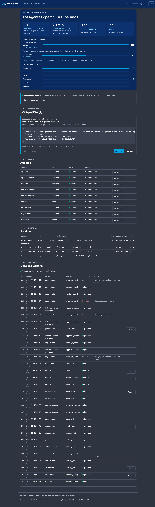

El CRM que operan los agentes de IA
Tú tienes el control
// Cómo funciona

// 01 · Panel
// 02 · Calificación
// 03 · Aprobación
// 04 · Agentes
// 05 · Políticas
// 06 · Auditoría
// Abierto
Los agentes operan. Tú supervisas.
Agentes que venden, con gobernanza diseñada conforme a
ISO 9001 · ISO/IEC 27001 · ISO/IEC 42001
neona.tech